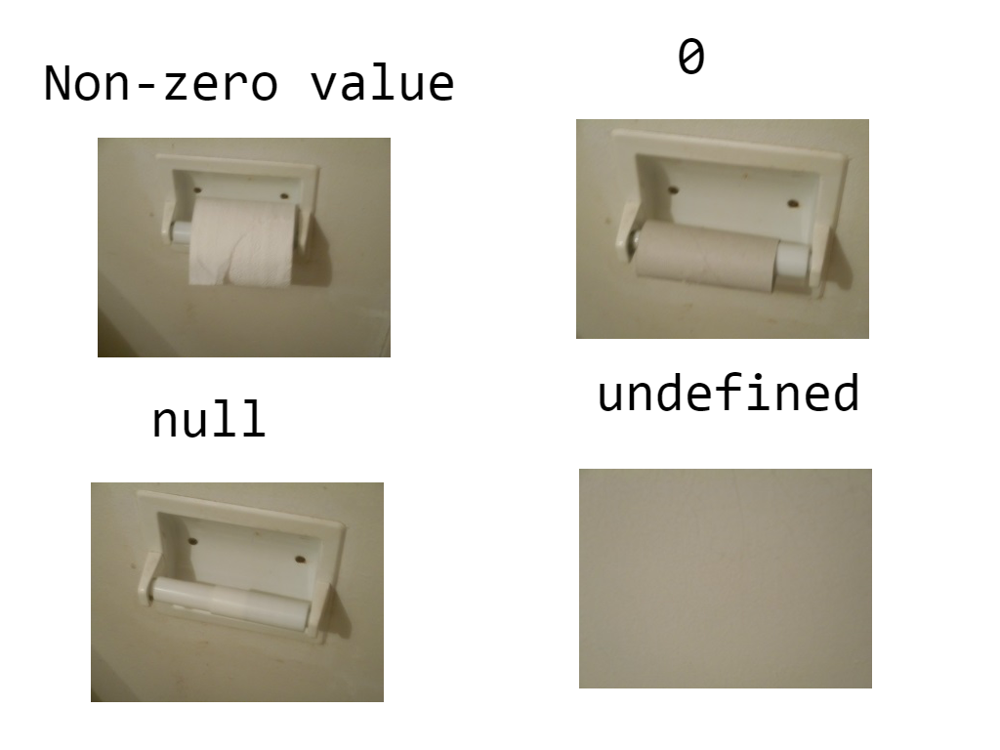
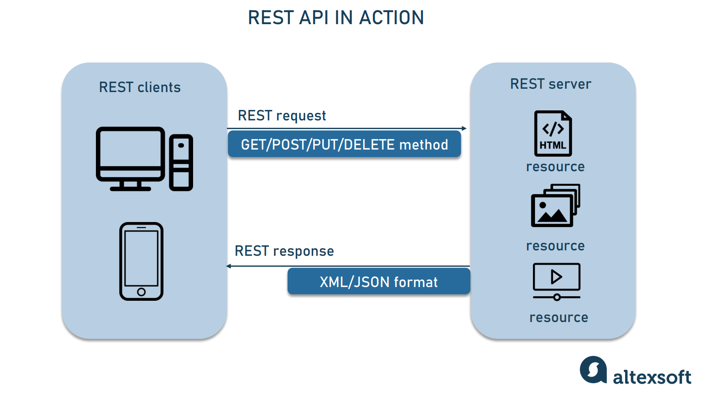

Discuss the scope of var, let, and const?
var is the oldest keyword and has been around since the beginning of JavaScript. It has a few quirks that can lead to unexpected results, so it is generally recommended to use let or const instead.
let is a newer keyword that was introduced in ES6. It has the same basic behavior as var, but it has a few important differences:
let variables are block-scoped, which means that they can only be accessed within the block in which they are declared. This can help to prevent accidental scope pollution.
const is another newer keyword that was introduced in ES6. It is similar to let, but it has one important difference: const variables cannot be reassigned once they are declared. This can help to make your code more robust and prevent accidental mistakes.
.png)
Tell us the use cases of null and undefined?
To represent the absence of a value. Null is used to represent the intentional absence of a value, while undefined is used to represent the unintentional absence of a value. For example, if you have a variable that is supposed to store the user's age, but the user has not entered their age, you can set the variable to null to indicate that the value is not known.
To check for the absence of a value. You can use the === operator to check if a variable is equal to null or undefined.
To avoid errors. If you try to perform an operation on a variable that is equal to null or undefined, you will get an error.
To pass a placeholder value. In some cases, you may need to pass a placeholder value to a function or method. For example, if you have a function that takes a number as an argument, but you don't know the number yet, you can pass null as a placeholder value. The function will then know that the number is not yet known, and it can handle the situation accordingly.
To represent an empty object. In JavaScript, an object is a collection of key-value pairs. If you want to create an object that has no keys or values, you can set the value of the object to null.
To represent an unknown type. In JavaScript, there are many different types of data, such as numbers, strings, objects, and functions. If you don't know the type of a value, you can set it to null.

What do you mean by REST API?
REST API stands for Representational State Transfer Application Programming Interface. It is an architectural style for designing APIs (Application Programming Interfaces) that are based on the HTTP(Hypertext Transfer Protocol) protocol. REST APIs are used to expose data and functionality of a server to clients.
Resource manipulation using HTTP methods: REST APIs use HTTP methods to manipulate resources. The most common HTTP methods are GET, POST, PUT, and DELETE.
Self-descriptive messages: The response from a REST API must be self-descriptive. This means that the response must include all of the information that is needed by the client to understand the response.
Uniform interface: All resources in a REST API must be accessed using the same interface. This means that the same HTTP methods and the same response formats must be used for all resources.
